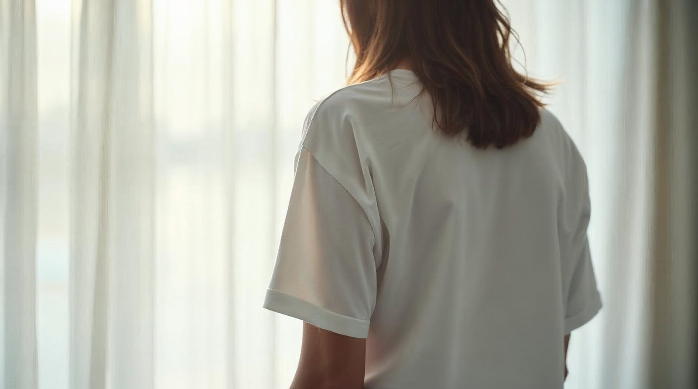
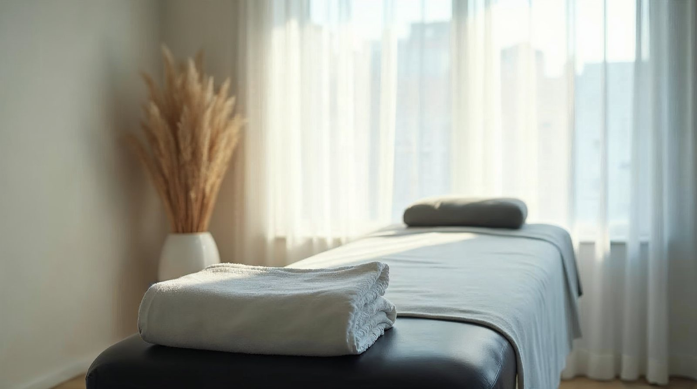
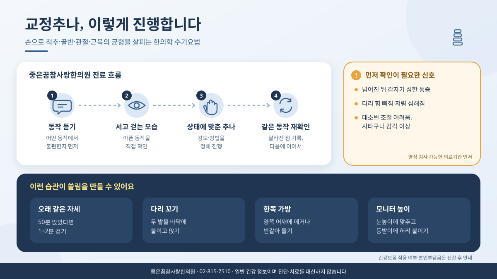

이종호 한의사 감수좋은꿈참사랑한의원 대표원장 (한의사 면허번호 19769)발행 2026-11-22 · 수정 2026-11-26
이 글의 차례
퇴근길 지하철에서 손잡이를 잡고 서 있다가, 허리를 펴려는데 '어휴' 소리가 먼저 나올 때가 있습니다. 하루 종일 모니터 앞에 앉아 있었으니 그럴 만도 하지요. 집에 와서 거울을 보면 한쪽 어깨가 내려가 있는 것 같고, 사진 속 내 모습은 고개가 앞으로 쑥 나와 있습니다.
그러다 누가 "추나 한번 받아 봐" 하고 권하면 마음이 복잡해집니다. 뼈를 우두둑 맞춘다는데 무섭기도 하고, 바쁜 와중에 시간 내서 다닐 수 있을지도 걱정이고요.
진료실에서 이런 말씀을 자주 듣습니다. "원장님, 추나는 많이 아파요?", "소리 나는 거 저 진짜 못 하겠어요." 저는 그 마음이 충분히 이해됩니다. 남의 손에 목이나 허리를 맡긴다는 건 생각보다 큰 용기가 필요한 일이니까요.
그래서 이 글에서는 교정추나가 어떤 진료인지, 어떤 분께 맞고 어떤 분은 조심해야 하는지, 실제로 받으면 어떤 느낌인지 제가 진료실에서 말씀드리는 그대로 적어 보려고 합니다.
교정추나는 어떤 진료인가요
추나는 한의사가 손이나 몸의 일부로 관절과 근육의 움직임을 조정하는 한의학 수기요법입니다. 손으로 밀고(推) 당긴다(拿)는 뜻이 이름에 그대로 담겨 있습니다. 교정추나라고 부를 때는 척추와 골반, 관절이 움직이는 방향과 범위를 살피고, 한쪽으로 쏠리거나 굳은 곳을 손으로 조금씩 풀어 가는 과정을 말합니다.
많은 분이 추나라고 하면 '뚝' 하는 소리부터 떠올리십니다. 그런데 소리는 치료의 목표가 아닙니다. 관절을 짧고 빠르게 움직이는 기법에서 소리가 날 때가 있을 뿐, 근육과 관절을 천천히 늘이거나 부드럽게 눌러 주는 기법도 추나에 속합니다. 어떤 기법을 쓸지는 그날 몸의 상태와 환자분이 편하게 받아들일 수 있는 정도를 보고 정합니다.
저는 오랫동안 추나를 많이 해 왔습니다. 추나를 할 때 손을 대고 환자분께 묻습니다. 여기를 움직일 때 어떠신지, 아까 아프다고 짚으신 데가 여기인지. 제가 짐작한 자리와 환자분이 손가락으로 가리키는 자리가 조금 다르면 손을 옮겨 다시 봅니다.
추나는 제 손이 일방적으로 무언가를 하는 진료라기보다, 손으로 느끼고 그 느낌이 맞는지 환자분께 확인해 가는 대화에 가깝습니다.
왜 몸이 한쪽으로 쏠리고 굳을까요
몸은 우리가 매일 하는 일을 기억합니다. 같은 자세로 오래 앉아 있으면 일부 근육은 계속 긴장하고, 반대쪽은 덜 쓰이면서 균형이 조금씩 한쪽으로 기웁니다. 다리를 꼬거나 한쪽 어깨로만 가방을 메는 작은 습관도 하루 이틀이면 아무 일 없지만, 몇 년이 쌓이면 골반과 어깨 높이 차이로 이어지기도 합니다.
예전에 다친 발목이나 무릎을 아끼며 걷던 습관이 허리와 골반에 부담을 넘기는 경우도 있습니다. 본인은 다 나은 줄 알고 잊고 지내는데, 걷는 모습을 보면 여전히 한쪽에 체중을 덜 싣고 계십니다. 아픈 곳과 원인이 있는 곳이 늘 같은 자리는 아니라는 걸, 저는 진료실에서 자주 느낍니다.
한의학에서는 이런 구조의 쏠림과 함께 근육의 긴장, 잠과 피로처럼 몸 전체의 상태도 살핍니다. 잠을 설친 다음 날 유난히 목이 뻣뻣하다는 분, 신경 쓰는 일이 몰린 주에 어깨가 돌처럼 굳는다는 분이 적지 않거든요. 그래서 저는 허리 이야기를 듣다가도 요즘 잠은 어떠신지 여쭙곤 합니다.

'자세가 틀어졌다'는 말, 너무 겁먹지 않으셔도 됩니다
건강검진에서, 혹은 사진관에서 "어깨 높이가 다르시네요"라는 말을 듣고 걱정이 되어 오시는 분이 계십니다. 사실 사람 몸은 원래 좌우가 완전히 똑같지 않습니다. 오른손잡이는 오른쪽 어깨가 조금 내려가 있기도 하고, 골반 높이도 조금씩 차이가 납니다. 눈에 보이는 차이가 있다고 해서 그것만으로 문제라고 단정하지 않습니다.
제가 더 눈여겨보는 건 모양보다 움직임입니다. 고개를 오른쪽으로 돌릴 때와 왼쪽으로 돌릴 때 범위가 얼마나 다른지, 허리를 숙일 때 한쪽만 당기는지, 걸을 때 골반이 어떻게 움직이는지. 그리고 그 움직임이 환자분의 불편과 이어지는지를 봅니다. 아무 불편이 없는데 모양만 보고 고치자고 하지는 않습니다.
반대로 겉으로는 반듯해 보이는데 특정 동작에서만 걸리는 분도 계십니다. 그래서 저는 거울 앞 모습보다 환자분이 "이럴 때 아파요" 하고 직접 보여 주시는 동작을 더 믿는 편입니다.
이런 분들이 상담을 많이 하십니다
하루 종일 앉아 일하다 퇴근 무렵이면 허리와 골반이 굳는 직장인, 노트북으로 오래 공부해 목과 등이 굽은 학생, 아이를 한쪽으로만 안아 키우다 어깨와 허리가 뻐근해진 분들이 많이 오십니다. 자세가 틀어졌다는 말을 자주 들었는데 어디서부터 손대야 할지 모르겠다는 분도 계십니다.
목과 어깨가 늘 무겁고, 고개를 돌리거나 허리를 숙일 때 한쪽이 더 불편하다면 한 번쯤 움직임을 살펴볼 만합니다. 강한 교정이 부담스러운 분이라도 상관없습니다. 그런 분께는 처음부터 부드러운 기법으로 시작하자고 말씀드립니다. 무섭다는 마음을 꾹 누르고 참으시면, 몸도 같이 긴장해서 오히려 손이 잘 들어가지 않습니다.
추나가 처음이시라면 혼자 오시기가 망설여질 수 있습니다. 가족이 함께 들어와 설명을 들으셔도 괜찮습니다. 특히 어르신이라면 드시는 약과 예전 검사 이야기를 가족분이 더 잘 기억하실 때가 많아서, 함께 오시면 저도 여쭙기가 한결 수월합니다.
이런 경우에는 먼저 조심해야 합니다
추나는 누구에게나 바로 하는 진료가 아닙니다. 아래에 해당하는 분은 추나를 하지 않거나, 진찰과 검사 결과를 보고 아주 신중하게 판단합니다. 진료 전에 미리 알려 주세요.
- 최근 넘어지거나 부딪힌 뒤 갑자기 심해진 통증(골절 가능성)
- 심한 골다공증, 암 병력, 척추 수술을 받은 적이 있는 경우
- 팔다리 저림이나 힘 빠짐이 점점 심해지는 등 신경 증상이 있는 경우
- 복용 중인 약(특히 혈액을 묽게 하는 약)이 있거나 임신 중인 경우(자세와 기법을 고를 때 꼭 참고합니다)
이런 내용은 처음 오셨을 때 제가 여쭙지만, 혹시 빠뜨리면 환자분이 먼저 말씀해 주셔도 좋습니다. 저는 추나를 하기 전에 이 몸에 해도 되는지를 판단하는 일이 기법 자체보다 더 무겁다고 생각합니다.

실제로 받으면 어떤 느낌인가요
솔직하게 말씀드리겠습니다. 굳어 있던 곳을 움직이면 뻐근하거나 당기는 느낌이 들 수 있습니다. 예민한 자리를 누를 때는 '아, 거기' 소리가 절로 나오기도 합니다. 다만 참아야 하는 진료는 아닙니다. 저는 손을 대기 전에 "불편하시면 바로 말씀해 주세요"라고 먼저 부탁드리고, 말씀하시면 그 자리에서 힘과 방향을 바꿉니다.
보통은 침대에 편하게 누우시거나 엎드리시고, 제가 목이나 허리, 골반을 천천히 움직여 보며 어디가 덜 움직이는지 확인합니다. 그다음 손으로 근육을 늘이거나 관절을 조금씩 움직여 줍니다. 숨을 천천히 내쉬어 달라고 말씀드릴 때가 많은데, 힘이 빠져야 몸이 손을 따라오기 때문입니다.
받고 나서 그날 저녁이나 다음 날, 평소 안 쓰던 근육을 쓴 것처럼 살짝 뻐근하다는 분도 계십니다. 대개 하루 이틀 사이에 가라앉지만, 통증이 오히려 심해지거나 저림이 새로 생기면 기다리지 말고 연락해 주세요. 그 반응도 다음 진료의 방향을 정하는 데 꼭 필요한 정보입니다.
다만 다리에 갑자기 힘이 빠지거나 대소변 조절이 어려워지면 연락을 기다리지 말고 바로 가까운 응급실로 가세요.
강한 교정이 무서운 분께, 부드러운 방식도 있습니다
추나를 망설이시는 분들께 저는 제일 걱정되시는 게 무엇인지부터 여쭙니다. 대답은 대개 둘 중 하나입니다. 소리가 무섭다, 아니면 목을 남한테 맡기는 게 겁난다. 둘 다 자연스러운 마음입니다. 그래서 그런 분께는 관절을 빠르게 움직이는 기법은 아예 빼고, 천천히 늘이고 누르는 방식으로만 진행하자고 말씀드립니다.
두개천골추나라는 방식도 있습니다. 머리, 척추, 천골(엉덩이 가운데 뼈) 주변을 비교적 부드러운 손길로 살피는 수기 요법입니다. 손이 닿는 느낌이 훨씬 가볍기 때문에 강한 자극이 부담스러운 분도 상태를 보고 적용을 검토할 수 있습니다.
자극의 세기는 환자분이 편안하게 받아들일 수 있는 범위 안에서 조절합니다. 어떤 방식이 맞을지는 진찰한 뒤에 함께 정하겠습니다.
처음에는 부드러운 방식으로 시작했다가, 몸이 손에 익숙해지고 마음이 편해지면 그다음 단계를 이야기하는 경우도 많습니다. 반대로 끝까지 부드러운 방식만 하셔도 괜찮습니다. 무엇을 할지는 늘 환자분과 상의해서 정합니다.
바쁜데 몇 번이나 다녀야 하나요
솔직히 이 질문이 제일 어렵습니다. 몇 번이면 된다고 숫자로 말씀드리면 마음은 편하시겠지만, 저는 그렇게 약속드리지 않습니다. 몸이 굳어 온 시간도, 매일 앉아 계신 시간도, 손에 반응하는 속도도 사람마다 다르기 때문입니다.
대신 이렇게 말씀드립니다. 오실 때마다 지난번에 불편했던 그 동작으로 다시 확인하고, 달라진 점과 그대로인 점을 함께 보자고요. 같은 동작에서 변화가 뚜렷하지 않으면 방법을 바꾸거나 다른 진료를 함께 검토합니다. 그렇게 한 번 한 번 확인하면서 다음 일정을 정하면, 막연히 다니는 것보다 시간이 덜 아깝게 느껴지실 겁니다.
출퇴근 시간이 빠듯하신 분께는 평일 저녁이나 주말 진료 시간을 이용하시라고 권해 드립니다. 진료 시간은 홈페이지 안내를 보시거나 방문 전에 전화로 확인해 주세요. 그리고 오지 못하는 날에도 집에서 할 수 있는 것을 같이 정해 두겠습니다.
진맥과 추나, 그리고 다른 진료와의 연결
추나를 하러 오셨는데 원장이 왜 손목부터 잡느냐고 의아해하시는 분도 계십니다. 저는 처음 오신 분이든 다시 오신 분이든 모두 맥부터 짚고, 말씀을 듣고, 손으로 몸을 살핍니다. 필요하면 혀를 보거나 초음파로 근육과 힘줄을 확인하기도 합니다.
이렇게 몸 전체를 살피는 데는 이유가 있습니다. 허리가 아프다고 오셨어도 잠을 못 주무시거나 속이 불편한 날이 계속되면, 몸이 회복할 여유가 줄어 있을 수 있기 때문입니다.
재미있게도 제가 진맥을 깊이 공부하게 된 계기도 추나였습니다. 추나를 많이 하던 손끝 감각으로 맥을 먼저 많이 짚어 보라는 동료의 말을 듣고, 그때부터 기회가 될 때마다 맥을 짚었습니다. 손으로 느끼고 그 느낌이 맞는지 환자분께 묻는 일. 추나와 진맥은 제게 같은 뿌리에서 나온 일입니다.
추나만 하는 날도 있고, 통증 부위와 상태에 따라 침이나 약침, 체외충격파를 이어서 쓰는 날도 있습니다. 많이 받는다고 좋은 것이 아니라 오늘 상태에 맞는 것을 고르는 게 중요하다고 저는 늘 말씀드립니다. 무엇을 왜 하는지는 그때그때 설명해 드리겠습니다.

첫 방문은 이렇게 진행됩니다
처음 오시면 어떤 동작에서 가장 불편한지부터 여쭙니다. 앉았다 일어날 때인지, 고개를 돌릴 때인지, 허리를 숙일 때인지요. 하루 중 언제 심한지, 예전에 다치거나 수술한 곳은 없는지, 드시는 약은 무엇인지도 듣습니다. 다른 병원에서 찍은 X선이나 MRI 결과지가 있으면 가져와 주세요. 함께 보면서 이야기하면 훨씬 수월합니다.
그다음 서 있는 모습과 걷는 모습, 아픈 동작을 직접 해 보시게 하고, 목·등·허리·골반을 움직여 보며 압통과 근력, 저림 같은 신경 증상을 확인합니다. 그 결과를 보고 추나가 맞는지, 맞다면 어떤 기법이 좋을지 설명해 드립니다. 추나가 맞지 않다고 판단되면 그대로 말씀드리고 다른 방법을 안내합니다.
추나요법은 건강보험 적용 대상과 횟수 같은 조건이 정해져 있어서, 적용 여부와 본인부담금은 진찰 후 안내해 드립니다. 미리 궁금하시면 방문 전 전화로 확인해 주세요.
오시기 전에 준비해 주시면 좋은 것
추나는 몸을 움직여 보며 하는 진료라, 몸에 붙지 않는 편한 옷차림이면 좋습니다. 청바지나 딱 붙는 치마보다는 허리와 다리를 마음껏 굽히고 펼 수 있는 넉넉한 옷이 편합니다. 앞에서 말씀드린 검사 결과지와 드시는 약 이름도 챙겨 와 주세요. 약 봉투를 사진으로 찍어 오셔도 충분합니다.
그리고 하나만 더 부탁드리고 싶습니다. 오시기 전에 "어떤 동작이 제일 불편한지" 한 가지만 떠올려 오세요. 아침에 세수하려고 허리를 숙일 때인지, 운전하다 고개를 돌릴 때인지, 의자에서 일어설 때인지요. 그 동작 하나가 첫 진료의 출발점이 되고, 다음 진료에서 다시 확인할 기준이 됩니다.
걱정되는 점이 있다면 그것도 그대로 말씀해 주세요. 무섭다, 시간이 없다, 예전에 받아 봤는데 불편했다. 어떤 이야기든 괜찮습니다. 그 말씀을 들어야 기법과 일정을 함께 정할 수 있습니다.

받고 난 뒤, 집에서 함께 해 주실 일
추나를 받은 날 진료실에서 몸이 가볍게 느껴져도, 다음 날 다시 하루 열 시간을 같은 자세로 앉아 있으면 몸은 금세 익숙한 쪽으로 돌아가려 합니다. 오래 굳은 습관은 손으로 한두 번 만진다고 바뀌지 않습니다. 그래서 저는 생활 속 작은 습관을 꼭 함께 여쭙고 같이 정합니다.
50분 정도 앉아 있었다면 일어나 1~2분이라도 걷거나 허리를 펴 주세요. 다리 꼬기를 의식적으로 줄이고 두 발을 바닥에 붙이고 앉아 보세요. 가방은 좌우를 번갈아 들고, 모니터는 눈높이에 가깝게 올려 주세요. 아침에 일어나기 전 누운 채로, 아프지 않은 범위에서 무릎을 가슴 쪽으로 천천히 당겨 보는 것도 좋습니다.
이렇게 말씀드리면 다들 "알죠, 아는데 잘 안 돼요" 하십니다. 맞습니다. 저도 잘 압니다. 그래서 다음에 오시면 제가 했던 말을 또 하기 전에 먼저 여쭙겠습니다. 해 보니 어떠셨는지, 무엇이 제일 어려우셨는지. 지키기 어려웠던 사정까지 들어야 다음 이야기를 함께 정할 수 있으니까요.
진료 사이에는 불편한 동작 한두 가지와 그때의 불편한 정도를 10점 기준으로 적어 두시면 좋습니다. 하루 중 심해지는 시간대, 그날 앉아 있던 시간도 함께요. 2~3주 정도 적어 보면, 환자분도 저도 몰랐던 흐름이 보일 때가 있습니다.
이런 증상은 먼저 다른 의료기관에서 확인이 필요합니다
넘어지거나 부딪힌 뒤 갑자기 심하게 아프고 움직이기 어렵다면 골절 여부부터 확인해야 합니다. 팔다리 저림이나 힘 빠짐이 며칠 사이 점점 심해진다면 미루지 말고 영상 검사가 가능한 병원 진료를 먼저 받으세요.
대소변 조절이 어렵거나 사타구니·엉덩이 감각이 둔해진 경우, 다리에 갑자기 힘이 빠지는 경우에는 외래 예약을 기다리지 말고 바로 가까운 응급실로 가셔야 합니다.
열이 나면서 허리가 아프거나, 밤에 누워 쉬어도 가라앉지 않는 통증이 이어질 때도 영상 검사가 가능한 의료기관에서 먼저 확인하는 편이 안전합니다. 복용 중인 약은 처방한 의사와 상의 없이 줄이거나 끊지 마세요.
이렇게 적고 보니 겁을 드리는 것 같아 조심스럽습니다. 대부분의 뻐근함은 이런 경우가 아니지만, 혹시라도 놓치면 안 되는 신호이기에 적어 둡니다. 저도 진찰하다가 이런 신호가 보이면 추나를 미루고 다른 검사를 먼저 권해 드립니다.
마치며
허리나 목이 뻐근한 채로 하루를 버티는 일이 얼마나 지치는지, 진료실에서 많은 분을 뵈며 조금은 압니다. 아파도 출근은 해야 하고, 아이는 안아 줘야 하고, 공부는 계속해야 하니까요. 그동안 그 몸으로 참 많은 일을 해 오셨습니다.
추나가 처음이라 망설여지신다면, 오셔서 그 걱정부터 말씀해 주세요. 소리가 무섭다면 소리 나지 않는 기법부터, 시간이 걱정이라면 집에서 할 수 있는 것부터 함께 정하겠습니다. 다음에 오시면 지난번 불편했던 그 동작부터 다시 여쭙겠습니다.
함께 읽으면 좋은 글
- 거북목과 일자목은 추나로 어떻게 살피나요?
- 오래 앉아 있으면 허리가 아플 때 한의원에서는 무엇을 먼저 묻나요?
- 출퇴근 지하철에서 오래 서 있으면 허리가 뻐근할 때

교정추나는 어떤 진료인가요
- 추나는 한의사가 손이나 몸의 일부로 관절과 근육의 움직임을 조정하는 한의학 수기요법…
- 손으로 밀고(推) 당긴다(拿)는 뜻이 이름에 그대로 담겨 있습니다.
왜 몸이 한쪽으로 쏠리고 굳을까요
- 몸은 우리가 매일 하는 일을 기억합니다.
- 같은 자세로 오래 앉아 있으면 일부 근육은 계속 긴장하고, 반대쪽은 덜 쓰이면서 균…
'자세가 틀어졌다'는 말, 너무 겁먹지 않으셔도 됩니다
- 건강검진에서, 혹은 사진관에서 "어깨 높이가 다르시네요"라는 말을 듣고 걱정이 되어…
- 사실 사람 몸은 원래 좌우가 완전히 똑같지 않습니다.
이런 분들이 상담을 많이 하십니다
- 하루 종일 앉아 일하다 퇴근 무렵이면 허리와 골반이 굳는 직장인, 노트북으로 오래…
- 자세가 틀어졌다는 말을 자주 들었는데 어디서부터 손대야 할지 모르겠다는 분도 계십니다.
자주 묻는 질문
추나요법은 어떤 진료인가요?
한의사가 손이나 몸의 일부로 척추·관절·근육의 움직임을 살피고 조정하는 한의학 수기요법입니다. 적용 대상과 건강보험 적용 여부, 본인부담금은 진찰 후 안내해 드립니다.
교정이라고 하면 뼈 소리가 꼭 나나요?
아닙니다. 소리는 치료의 목표가 아니며 부드러운 기법만으로 진행하기도 합니다. 불편하거나 무서우면 바로 말씀해 주세요. 강도와 방법을 바꿉니다.
받고 나서 뻐근할 수도 있나요?
그날 저녁이나 다음 날 가볍게 뻐근할 수 있고 대개 하루 이틀 사이에 가라앉습니다. 통증이 심해지거나 저림이 새로 생기면 바로 연락해 주세요.
모든 환자가 추나를 받나요?
아니요. 골절, 심한 골다공증, 신경 증상 등이 있으면 하지 않거나 신중히 판단하며, 진찰 후 필요하다고 판단될 때만 진행합니다.
두개천골추나는 일반 추나와 어떻게 다른가요?
훨씬 부드러운 접촉으로 머리·척추·천골 주변을 살피는 방식입니다. 어떤 방식이 맞을지는 진찰 후 말씀드립니다.
좋은꿈참사랑한의원은 재진 때 지난번 이야기부터 이어서 여쭙니다. 진료시간과 예약은 오시는 길에서 확인하세요.
어디서 상담받을 수 있나요?
좋은꿈참사랑한의원은 서울 동작구 만양로2길 2 신성빌딩 3층·5층(서울 동작구 상도동, 7호선 상도역 3번 출구 근처)에 있습니다. 한의사 3명(이종호 대표원장, 조영기 수석진료원장, 정원영 진료원장)이 진료합니다. 진료시간은 평일 09:30~20:00(점심 13:00~14:00), 토·일·공휴일 09:30~15:00이며, 방문 전 전화로 확인을 권합니다. 예약은 네이버 예약, 카카오톡 상담, 전화 02-815-7510로 받습니다.
이 글은 일반적인 건강 정보이며 개인의 진단이나 치료를 대신하지 않습니다. 증상이 있거나 복용 중인 약이 있다면 진료를 통해 확인하세요. 치료 효과는 개인마다 다를 수 있습니다.
작성 기준: 일반적으로 알려져 있는 건강 정보를 참고해 정리했습니다(대표원장 감수). 증상 기록은 1~2주 동안 하루 1회, 비슷한 시간에 적어 오시면 지난 상태와 비교하기 쉽습니다.